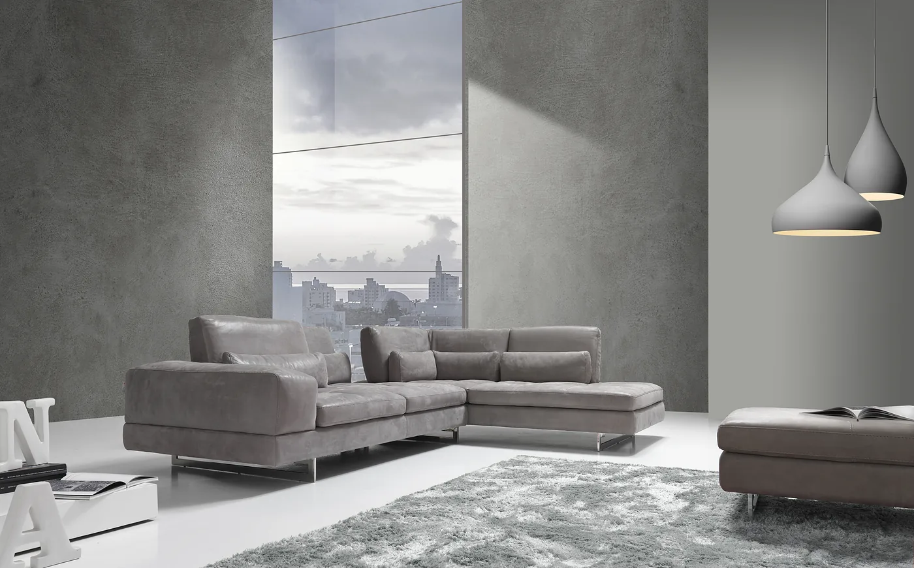
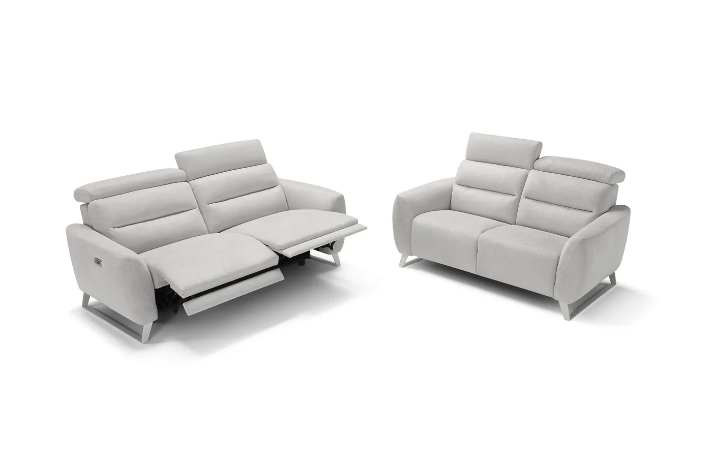
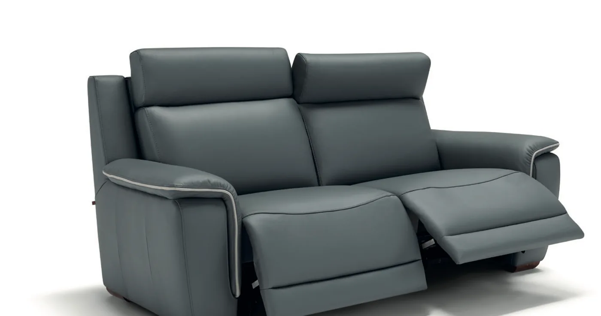
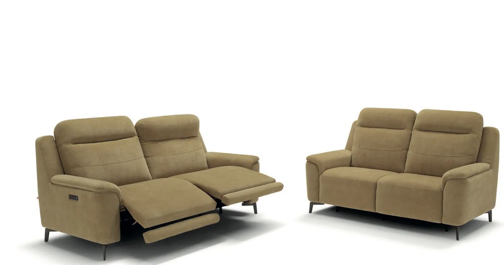
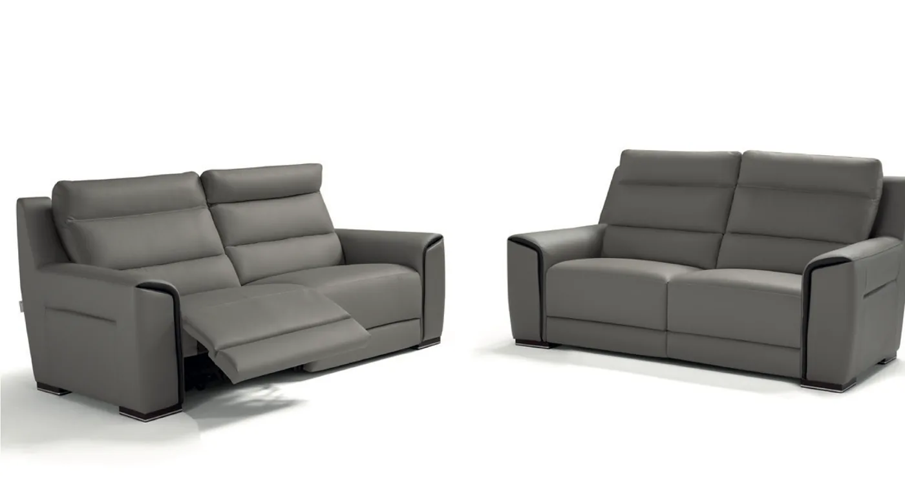
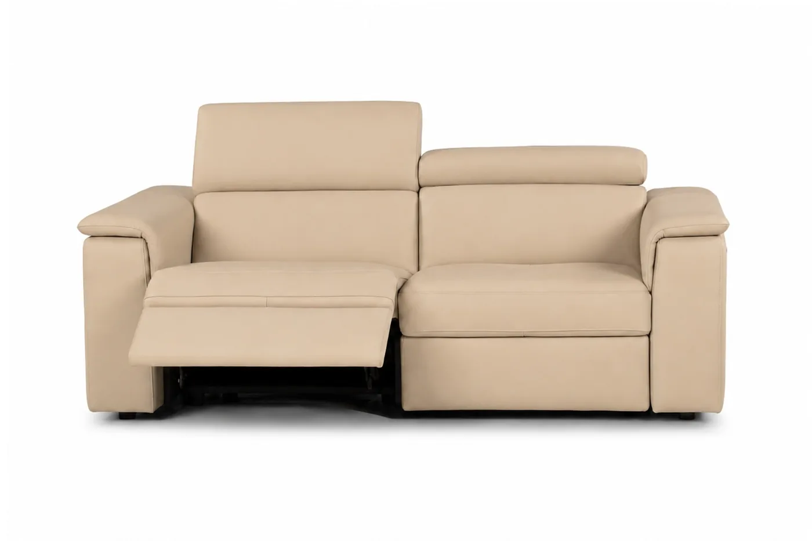
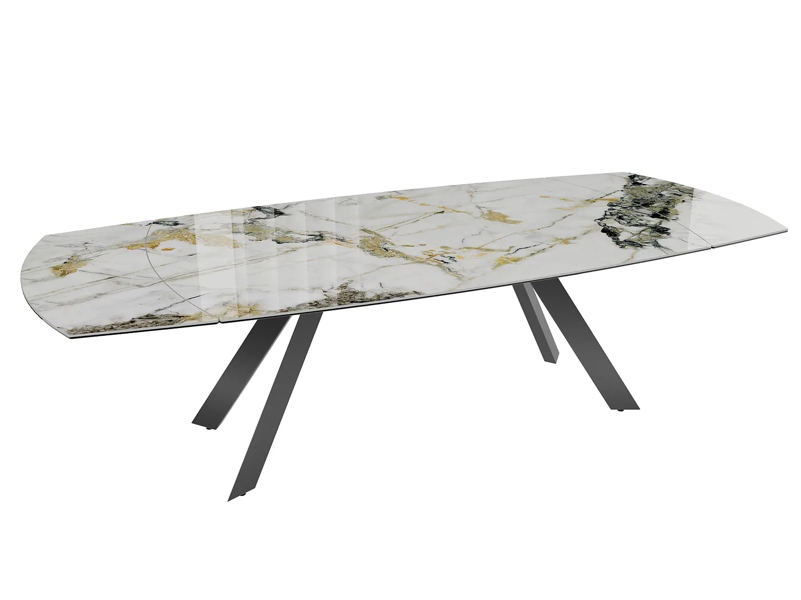
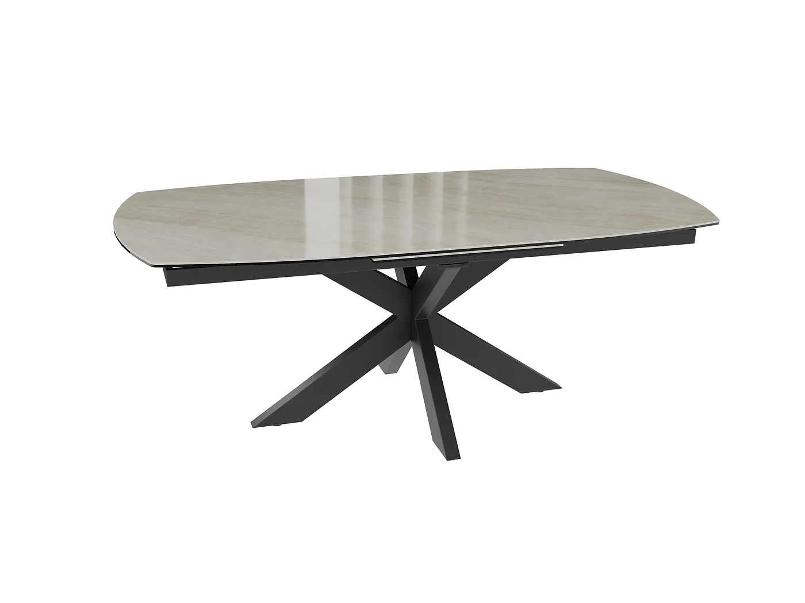
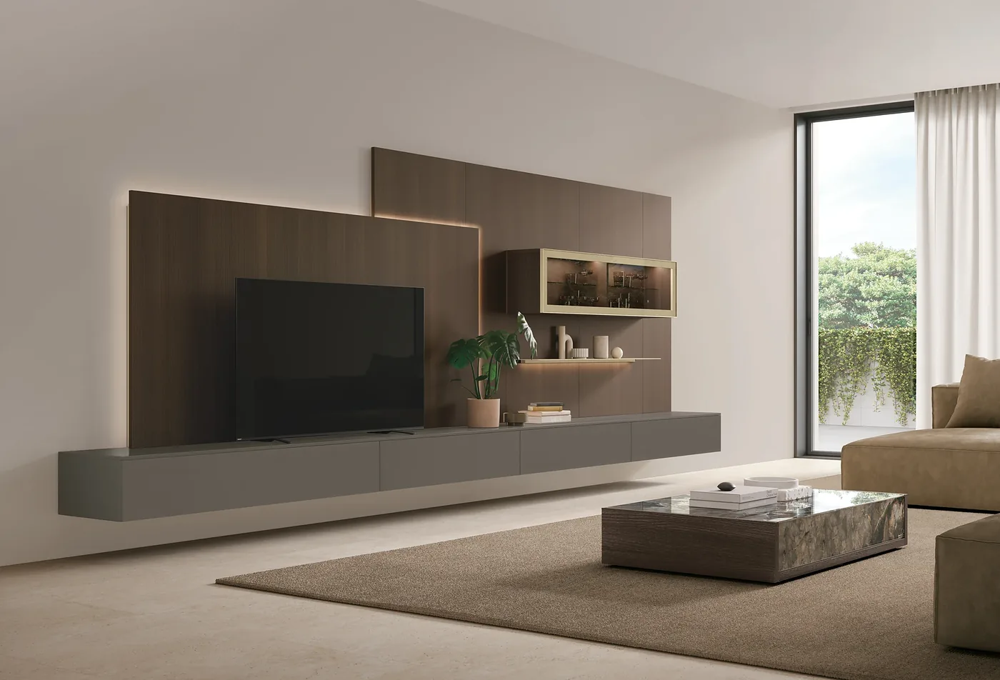
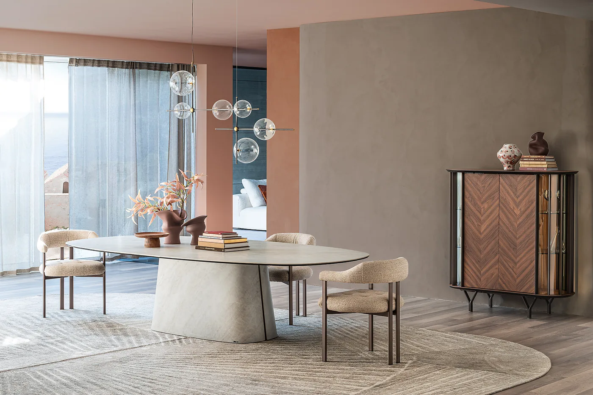

Catalogue
Tous nos meubles, pièce par pièce.
Plusieurs photos mènent à leur modèle : touchez-les pour le découvrir. Certains meubles sont exposés au magasin, d’autres se composent sur commande.
Par pièce
Salon, salle à manger, séjour, literie, chambre.
Salon
Retrouvez les dimensions et les revêtements de nos canapés et fauteuils. Découvrir l’espace Salon.
Photo 1 / 13
-

ZebraMax Divani -

GalaMax Divani -

CoffeeMax Divani -

CurryMax Divani -

OsakaMax Divani -

TataMax Divani -

EmuMax Divani -

DanaMax Divani -

KumaMax Divani · À venir au magasin -

NestMax Divani · À venir au magasin -

WillyMax Divani · À venir au magasin -

OaklandNicoletti -

MemphisNicoletti


Salle à manger
Les fiches techniques de nos tables : dimensions, plateaux et finitions.
Photo 1 / 8
-

AustinAkante -

InfluenceAkante -

KheopsAkante -

MilazzoAkante -

MissouriAkante -

OntarioAkante -

PhoenixAkante -

VancouverAkante


Photo 1 / 3
-

Séjour TimeTomasella -

Bibliothèque AndromedaTomasella -

Meuble TV Atlante AT150Tomasella


Photo 1 / 3
-

BoxspringVelda -

FlyVelda -

BoxspringVelda


Par besoin
Ce que l’on nous demande le plus.
-

-
-

-



Venez les voir au magasin.
Retrouvez-nous à Leval-Trahegnies, entre Binche et La Louvière, du lundi au samedi. Venez librement, ou prenez rendez-vous pour préparer votre projet. Parking facile d’accès.
Partager cette page
- Lundi
- 13h30 – 18h30
- Mardi au samedi
- 10h30 – 18h30
- Dimanche
- Fermé
- Téléphone
- 064 46 07 72
- Livraison
- Par nos soins, dans le Hainaut (Binche, La Louvière, Mons, Charleroi…) et la province de Namur
Nous livrons aussi dans le nord de la France. Ailleurs, dont Bruxelles : sur demande.